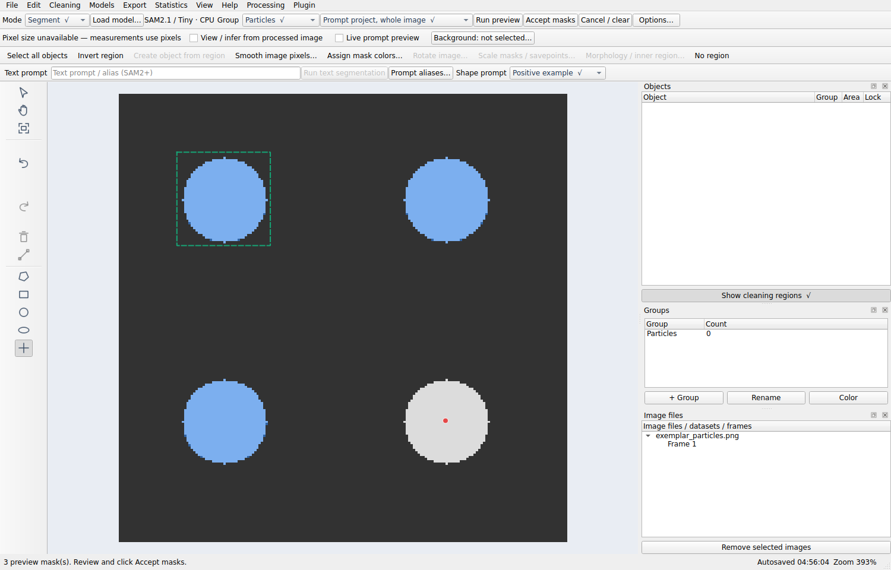

SAM3.1: text and shape prompts#
This guide describes the SAM3.1 Multiplex · GPU only family in version 1.4.2. It uses the official native predictor, wrapped for a single still image.
Before you start#
Use a dedicated Anaconda/Conda GPU environment on Linux or WSL2, with a compatible NVIDIA driver. Follow installation.
Obtain approved access to
facebook/sam3.1and its authenticsam3.1_multiplex.pt. SAM3’ssam3.ptcannot be renamed/substituted.Start the app from that environment. Open the image and choose/create a group.
In Load model…, choose SAM3.1, matching weights, and NVIDIA CUDA (Conda) or Automatic device. Wait for the loaded status.
Choose Segment. Select Prompt project, whole image for concept search.
The GPU recipe is provided, but actual CUDA execution and model quality must be checked on the target machine. A CPU installation cannot run this backend.
Text prompt recipe: black dots#
Enter
black dotsin the Text prompt / alias (SAM2+) field. The “SAM2+” label includes SAM3 and SAM3.1.Click Run text segmentation, or press Enter in that field.
Watch the status/progress area and inspect the provisional masks across the current image. No annotations are committed yet.
Check whether faint/overlapping particles are missed, whether adjacent particles merge, and whether contamination or image-edge regions are added.
Adjust the phrase or add shape examples as below; run/review again.
Click Accept masks only when the current preview is acceptable. Use Cancel / clear to discard pending prompts/previews or request cancellation.
black dots is a suggested starting phrase, not a measured best prompt for
every microscope image. Compare alternatives such as dark particles in
separate recorded experiments if needed. Keep the effective phrase and the
chosen thresholds with your result.
The run button switches to Segment if necessary, but it does not force whole-image scope. Check Scope before running. If Scope is Automatic grid, the grid path ignores text; switch back to the desired prompted scope first.
Shape prompt recipe#
Use shape prompts when appearance conveys the target more clearly than words.
For a shape-only trial, clear the text field and choose Prompt project, whole image.
Select Rectangle, Circle, Ellipse, or Polygon. The polarity control is beside Shape prompt on the Segmentation prompts toolbar.
Choose Positive example and draw around one representative particle. Draw tightly enough to describe one object rather than several neighbors.
Add another positive example if desired particles vary in size or appearance.
Choose Negative example and mark a visually confusing unwanted object, for example contamination. Negative examples describe an excluded type; inspect whether valid particles are inadvertently suppressed.
With Live prompt preview enabled, completed shapes schedule a new background preview. Otherwise use Run preview.
Add examples until the preview is satisfactory, then Accept masks.
The model searches the whole current image, not only inside your example shape. A positive rectangle here describes an object concept; it is not an instruction to clip output to that rectangle.
What the shapes become#
SAM3.1 receives each area’s enclosing bounding box, its positive/negative label, and optional text. A circle, ellipse, or polygon is not passed as an exact contour or mask prompt. All current example boxes are sent together in one request so the complete positive/negative context is retained.
This explains why a tight example shape helps, and why drawing a polygon around an object is different from limiting output to an exact polygon ROI.
Point prompts#
In Segment, left-click adds a positive point and right-click a negative point. For whole-image SAM3.1 concepts, each point first produces an instance; that instance’s bounding box becomes a positive or negative concept example. A negative point is therefore converted to a negative instance example in this path, not simply used as a global pixel-erasing command.
Point hides/disables Single object and Inside ROI only. If either was selected, the app returns to whole-image prompting. Choose an area tool to use those scopes. Native single-object point refinement in internal APIs does not override this GUI guard.
Combine text with shape examples#
In Prompt project, whole image, keep black dots in the text field and add
positive/negative shapes. SAM3.1 receives the effective text and all concept
boxes together. Use a small number of representative examples first, inspect
the update, and record the final prompt set. More examples do not guarantee
better segmentation.
To compare shape-only and text-only behavior fairly, use Cancel / clear between trials and check the text field/pending examples before running. Existing accepted objects are protected from new proposals, so compare experimental prompt settings on a fresh image/project state or explicitly record that state.
Restrict text results to an ROI#
Choose an area tool and Inside ROI only.
Draw the region in which output is allowed. It is now a region, not a stored whole-image positive exemplar.
Enter
black dotsor an alias and click Run text segmentation.Inspect the masks clipped to the drawn region, then accept.
Text-driven inference can still use whole-image model context; the app applies the ROI as a final output mask. It does not promise a cropped inference speedup. To limit output to the outside of selected masks, see inverse/exact regions.
With an empty text field, Inside ROI supplies an area-derived native object prompt and clips that result. It does not automatically mean “find every particle in this ROI”. Text or a deliberately chosen search method determines what candidates are generated.
Refine one accepted object#
Select one unlocked foreground object and choose Refine selected object explicitly from its context menu. Use an area tool and clear text when you want the native single-object path. New accepted refinement replaces that object while preserving its identity/group. Normal whole-image prompting protects existing accepted masks and does not silently replace them.
Aliases, thresholds, and live preview#
Create nanoparticle → black dots using Prompt aliases…, then type
nanoparticle. The tooltip shows the resolved phrase, and accepted-mask
provenance records the typed and effective text. Aliases substitute language;
they do not fine-tune the model. See alias rules.
Options… controls minimum score, minimum area, candidate-grid density, and maximum objects. Grid density belongs to grid/candidate generation and does not alter a native SAM3.1 text request. Inspect the output when changing thresholds; a lower score can increase false positives. The whole-image SAM3.1 exemplar route filters scores, area and near-duplicates before preview.
Live preview supersedes older requests and discards outdated results. It is not a guarantee of an instantaneous response: native calls and session loading take time, and cancellation may finish after an active call returns.


This screenshot illustrates the interface, not a newly measured SAM3.1 GPU result.
If a result is unexpected#
Symptom |
Check |
|---|---|
Text controls missing |
The loaded family must be SAM2/2.1, SAM3, or SAM3.1; SAM1 hides them. |
Run text behaves like a grid |
Change Scope from Automatic grid to a prompted scope. |
Only one object appears |
Check scope, clear unwanted region constraints, and use whole-image concept prompting. |
Shape preview ignores the drawn contour |
Area concepts use enclosing boxes; use an ROI for an exact output limit. |
Existing particles disappear from the new preview |
Accepted annotations are protected and excluded from new proposals; they are not deleted. |
Incorrect/missing model weights |
Select SAM3.1 and |
GPU load fails |
Check dedicated Conda, |
For implementation details, see the model-family guide,
Sam31Backend.concepts() and InferenceEngine in the API reference.